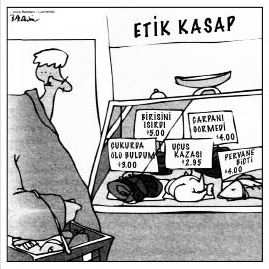

İyi ve kötünün ne olduğunu belirlemek etiğin alanına girer.
Ayrıca etik, dini görevlilerin, uzman tayfasının ve ebeveynlerin
boş durmasını engellemeye yarar. Çocukların ve filozofların
boş durmasını engelleyense din görevlilerine, uzman tayfasına
ve ebeveynlere "Niçin?" sorusunu sormalarıdır.
DIMITRI: Bana, "'İyi'den ne kastediyorsun?" diye sormuştunya... Yanıtı buldum: "İyi" demek, doğru bir ilkeye göre hareket etmek demektir.
TASSO: Zeus aşkına Dimitri, şaşırtıyorsun beni... Gerçek bir filozof gibi konuşmaya başladın! O zaman son bir soru sana: Doğru ilkeleri nasıl belirleyeceksin?
DIMITRI: Kolay. Herkes gibi: Annemden öğreneceğim.
TASSO (yana doğru seslenir): Neden bütün iyi öğrencileri Sokrates'e yolluyorsunuz?
Mutlakçı Etik: İlahi Yasa
İlahi Yasa, etiği gayet basitleştirir: Tanrı bir şeye yanlış diyorsa o şey tümüyle ve kesinlikle yanlıştır. O kadar. Ama sonrası sorunludur. Bir kere, Tanrı'nın gerçekten ne düşündüğünden nasıl emin olabiliriz? Köktencilerin bu soruya yanıtı hazırdır: "Kutsal Kitap öyle söylüyor." Peki, kutsal anlatılardaki kimseler aldıkları sinyallerin sahiden Tanrı'dan geldiğini nasıl bilebiliyorlar? İbrahim, Tanrı'nın oğlunu kurban etmesini istediğini düşünmüştü. "Madem Tanrı istiyor, yapsam iyi olur," dedi. Bizim İbrahim'e soracağımız ilk felsefi soruysa şu olurdu: "Ne? Çıldırdın mı sen? 'Tanrı' dediğin birinin senden çılgınca bir şey yapmanı istediğini duyuyorsun ve onun kimliğini belirlemeye bile çalışmıyorsun, öyle mi?"
İlahi Yasa'yı izlemenin bir diğer sorunuysa yorumlamadır. Hangi eylemler anne ve babayı onurlandırır? Anneler gününde kart atmak mı? Anne ve babanın arzusuna uyup aile doktorunuzun pek sıkıcı oğluyla evlenmek mi? Oğlan 1.55 boyunda ve 130 kiloysa bu soruların ilahi açıdan kılı kırk yaracak yanı kalmayacaktır...
İlahi Yasa'nın başat özelliklerinden biri şudur: Son sözü daima Tanrı söyler.
Musa, elinde tabletlerle Sina Dağı'ndan iner ve toplanan kalabalığa seslenir: "Bir iyi bir kötü haberim var. İyi haber, emirleri ona kadar indirtmeyi başardım. Kötü haber, zinayı listeden çıkartmaya ikna edemedim."
* * *
Genç ve şehvetli Aziz Augustine, "Tanrı'm, bana iffet bahşet. Ama hemen değil!" diye haykırdığında, anlaşıldığı kadarıyla aynı pazarlığa kalkışmıştı. Augustine'in ilahiyatın ıcığını cıcığına çıkarmaya uğraştığı açıktır. "Yani, tam ne zaman zina yapılmayacağını söylememiştin, değil mi?" Şaka gibi.
* * *
Platoncu Erdem
Platon, başyapıtı Devlet'te, "Devlet büyütülmüş ruhtur" der. Bundan dolayı bireyin erdemlerini tartışmak için ideal devletin erdemleri üzerine bir diyalog yazar ve söz konusu devletin hükümdarlarına Filozof Krallar der (Platon'un filozoflar arasındaki beğenilirliği buna bağlanabilir). Filozof Krallar, devleti Aklın insan ruhunu yönlendirdiği gibi yönlendirecekti. Temel erdem —hem Filozof Kral hem Akıl için— Platon'un İyi İdeasını anlamak diye tanımladığı Bilgelik'ti. Ancak bir insan için iyi olan başkası için hiç de öyle olmayabilir...
Üniversite eğitim kadrosunun toplantısında birdenbire bir melek belirir ve felsefe bölümünün başkanına, "Şu üçünden hangisini seçersen sana onu bahşedeceğim," der. "Bilgelik, Güzellik veya on milyon dolar."
Profesör hiç düşünmeden bilgeliği seçer.
Bir ışık parlamasının ardından profesör değişiyormuş gibi görünür ancak parlama bittiğinde diğerleri adamı masaya çöküp kalmış bomboş bakarken bulurlar. Hocalardan birisi, "Lütfen, bir şey söyle," der.
Profesör gözlerini masadan ayırmadan, "Parayı almalıydım" der.
Stoacılık
M.Ö. dördüncü yüzyılda Stoacıları ilgilendiren etik soru, son derece sıkı kontrol edilen bir imparatorluk içinde yaşamanın getirdiği baskın kadercilik anlayışına karşı nasıl tepki verileceğiydi. Gündelik yaşantılarında pek fazla bir şey değiştiremezlerdi. Bunun üzerine onlar da kişisel olarak kontrol edebildikleri tek şeyi, yani yaşama karşı tavırlarını değiştirmeye karar verdiler. Sonunda "yaşamdan duygusal kopuş" stratejisini geliştirdiler. Bu tavra apathia (duygulara kapılmama) dediler. Epey alay konusu edilmelerine yola açan bu duyumsamazlık, Stoacılar için bir erdemdi. Stoacılar, arzularının getirdiği mutsuzlukları (zührevi hastalıklar, akşamdan kalmanın keyifsizliği ve bozuk kafiyeler) savmak uğruna kimi mutlulukları (seks, uyuşturucu ve Rock'n'Roll) feda etmeyi göze aldılar. Asla arzuyla değil, daima akılla hareket ettiler ve bu minvalde kendilerini yegâne gerçekten mutlu –yani mutsuz olmayan– insanlar olarak gördüler.
Aşağıdaki fıkrada Bay Cooper, Stoacılığın modern bir biçimini örnekliyor: Vekâleten Stoacılık.
Cooper çifti dişçinin muayenehanesine girdiğinde, Bay Cooper çok acelesi olduğunu belirtir."Hiç ıvır zıvıra girmeyin doktor," der. "Gazdı, iğneydi, falan gerekmiyor. Çekiverin şunu gitsin."
"Keşke her hastam sizin kadar stoacı olsa," der doktor hayranlıkla. "Hangi dişmiş bir bakalım."
Bay Cooper karısına döner: "Aç ağzını aşkım."
* * *
G. K. Chesterton, şunu yazmıştı: " 'İyi' sözcüğünün birçok anlamı vardır. Mesela adamın teki annesini beş yüz metreden tüfekle vurursa, o adama iyi nişancı denir ama bu, iyi birisi olduğu anlamına gelmez." Chesterton'ın gerçekten felsefi bir anlayışa sahip olduğu açıktır.
* * *
Yararcılık
Yirminci yüzyıl komünisti Vladimir Lenin'in "Amaç aracı haklı kılar," dediğini hepimiz biliriz ya, işin komik tarafı, bu beyanatın Cumhuriyetçi Tanrı Tayfası'nın en beğendiği filozoflardan John Stuart Mill'in görüşüne pek yakın düşmesidir. Mill ve yararcılar "sonuççu" bir etik önerdiler. Buna göre, bir eylemin ahlâki doğruluğu sadece sonuçlarıyla değerlendirilebilir.
Aşağıdaki fıkranın başkahramanının bir yararcı olduğu gayet açıktır:
Bayan O'Callahan, portresini yapan ressama, her iki bileğine birer altın bilezik, boynuna inci kolye, kulaklarına yakut küpeler ve başına elmas bir taç eklemesini buyurur.
Ressam, "İyi de," der, "bu epey yalana giriyor..."
"Bayım," der Bayan O'Callahan, "kocam, yirmilik bir şırfıntıyla gönül eğlendiriyor ve elimden hiçbir şey gelmiyor. Bari ben öldükten sonra portreme bakıp kıskançlıktan çatlasın namussuz."
Bu tür doğrulamalar, sonuçları yeterince "iyi" göründüğünde gayet ciddi rezillikleri gizlemede kullanılabilir:
Dul Bayan Brevoort, kent kulübünün havuzunun yakınlarında dolanırken güneşlenen son derece yakışıklı bir adam görür. Yanına gider ve "Sizi daha önce buralarda gördüğümü hatırlamıyorum," der.
"Doğrudur," der adam. "Otuz yıldır hapisteydim, yeni çıktım."
"Sahi mi? Neden hapisteydiniz?"
"Karımı öldürdüğüm için."
"A!" der Bayan Brevoort. "Bekârsınız yani!"
Çağdaş ve etkileyici yararcılardan Peter Singer'in kurgusal denemeleri gerçekten ilgi çekicidir. Bu denemelerde Singer, sonuçlarının feci olduğu konusunda hepimizin aynı düşüncede olacağı kararlarla görünürde daha iyi olan kararların aslında etik açıdan benzer olduğunu analoji yoluyla göstermeye çalışır. Bunlardan birinde organ mafyasına çocuk satarak televizyon alacak parayı kazanabilecek bir adamı gündeme taşır. İlgili durum ve kararın kötülüğü konusunda herkes hemfikirdir. Ama Singer bu durumdan hareketle şunu öne sürer: Elindeki parayı evsiz çocuklara yardım eden hayır kurumlarına vermek yerine yeni bir televizyon almak için kullanan herkes özünde bu adamla aynı şeyi yapmaktadır. İnsanı çileden çıkaracak bir sonuç, değil mi? Bu aslında, aşağıdaki klasik fıkrada olduğu gibi, tikel bir dramatik öğeden genel bir ahlâki hükme varan analojiye dayalı kanıtlamadır.
Adam: Bir milyon dolar versem, benle yatar mısın? Kadın: Bir milyon mu? Eh, yatarım herhalde.
Adam: Peki, iki dolara?
Kadın: Git başımdan! Ne sandın beni sen?
Adam: Canım senin ne olduğunu anladık. İş fiyatta anlaşmaya kaldı.
Koşulsuz Buyruk ve Kadim Altın Kural
Kant kuşatıcı ilkesine, diğer tüm etik düsturların ölçütüne, "koşulsuz buyruk" adını verir. Bu buyruk ilk bakışta eski altın kuralın biraz süslenmiş hali gibi görünür.
Altın Kural: "Başkalarına, başkalarının sana yapmalarını istediğini yap."
Koşulsuz Kesin Buyruk: "Sadece evrensel anlamda geçerli yasa olmasını isteyebileceğin kurala göre hareket et."
Tabii Kant'ın yorumu kafadan insana soğuk geliyor. "Koşulsuz buyruk" teriminin kendisi insana, eh işte, pek "Alman" geliyor. Ama Kant ne yapsın? Bir Alman'dı sonuçta...
Ama gene de koşulsuz buyruk ile altın kuralın felsefi açıdan birçok ortak yanı vardır:
• Her ikisi de, "Babanı ve anneni onurlandıracaksın!" veya "Ispanak yiyeceksin!" gibi belli eylemler hakkında bir kural değildir.
• İkisi de hangi belli eylemlerin doğru, hangilerinin yanlış olduğunun belirlenmesine dair soyut bir ilke sunar.
• Söz konusu soyut ilke, her ikisinde de herkesin sizler ve bizler kadar değerli olduğunu ve bu nedenle herkese ahlâki açıdan aynı davranılması gerektiğini söyler.
Ama koşulsuz buyrukla altın kural arasında temel bir ayrım vardır. Aşağıdaki espri bu ayrımı tam anlamıyla vermektedir:
Sadist, altın kurala uyan bir mazoşisttir.
Mazoşist, başkalarına acı vererek sadece altın kuralın talebini yerine getirir: Kendisine yapılmasını istediğini başkalarına yapmak (tercihen kırbaçla). Ama Kant buna, mazoşistin "başkalarına acı ver" koşulsuz buyruğunun yaşanabilir bir dünya için evrensel kural olduğunu dürüstlükle asla iddia edemeyeceğini söyleyerek karşı çıkacaktır. Böyle bir iddia, bir mazoşiste bile mantıksız gelecektir.
Benzer endişeler İngiliz oyun yazarı George Bernard Shaw'u altın kuralı şu alaycı sözlerle yeniden yazmaya itmiştir:
"Başkalarına, başkalarının sana yapmalarını istediğini yapma; farklı zevkleri olabilir."
Altın kuralın çeşitlemeleri sadece Kant'ta değil, dünyanın birçok dinsel geleneğinde mevcuttur:
* * *
HİNDUİZM (M.Ö. On üçüncü yüzyıl dolayları)
Kendine yapılmasını istemediklerini başkalarına yapma...
Dharma budur. Dikkat edin.
—Mahabharata
JUDAİZM (M.Ö. On üçüncü yüzyıl dolayları)
Sana kötü olanı komşuna yapma; Tevrat'ın özü budur;
gerisi yorumdur; öğren.
—Babil Talmudu
ZERDÜŞTLÜK (M.Ö. On ikinci yüzyıl dolayları)
İnsan yalnızca kendisi için iyi olmayanı
başkasına yapmadığında iyidir.
—Dadistan-ı Dinik
BUDİZM (M.Ö. Altıncı yüzyıl dolayları)
Sana can yakıcı gelecek şekilde diğerlerinin canını yakma.
—Tibetli Dhammapada
KONFÜÇYÜSÇÜLÜK (M.Ö. Altıncı yüzyıl dolayları)
Sana yapılmasını istemediğin şeyleri başkalarına yapma.
—Konfüçyüs
İSLAM (M.S. Yedinci yüzyıl dolayları)
Kendiniz için dilediğinizi başkaları için dilemediğiniz
sürece hiçbiriniz mümin değilsinizdir.
—Hadis
BAHAÎ (M.S. On dokuzuncu yüzyıl dolayları)
Sana yüklenmesini istemediğini başkasına yükleme
ve sana söylenmesini istemediğini başkasına
söyleme. Buyruğum budur, öğren.
—Bahaullah.
SOPRANOCULUK (M.S. Yirmi birinci yüzyıl)
Başkasını hallederken, seni hallettiklerinde göstermelerini
bekleyeceğin saygıyı göster. Kapiş?
—Tony, 12. Bölüm.
Güç İstenci
On dokuzuncu yüzyıl Alman filozofu Friedrich Nietzsche, geleneksel Hıristiyan etiğini yerle bir ettiğini açıklamıştı.. İşe ufaktan başladı ve Tanrı'nın ölümünü duyurdu. Tanrı'nın buna karşılığı ise —özellikle üniversitelerin erkekler tuvaletlerinde sıkça görüldüğü üzere— Nietzsche'nin ölümünü duyurmak oldu. Nietzsche'nin Tanrı'nın ölümünden kastı, Batı kültürünün dünyaya dair meta-fizik açıklamalarını ve beraberindeki Hıristiyan etiğini aştığıydı. Nietzsche, "Doğa dışı bir etik" öğrettiği için Hıristiyanlığa "sürü ahlâkı" adını veriyor, sürüye egemen "alfa erkek" olmak kötüdür diyordu. Nietzsche, Hıristiyan etiğinin yerine, güç istenci adını verdiği gücün yaşamı onaylayan etiğini koydu. İstisnai birey, yani Übermensch ya da üstün-insan, sürü ahlâkının üstündeydi ve doğal gücünü ve üstünlüğünü sürü üzerinde özgürce gösterme hakkına sahipti. Konu altın kurala geldiğinde Friedrich'in Tony Soprano ekolünden olduğu açıktır. Haliyle Nietzsche Alman militarizminden lahana turşusuna kadar pek çok konuda suçlanmıştır:
Alman yemeklerinin esas sorunu, ne kadar yerseniz yiyin, bir saat sonra güce acıkmanızdır.
Duyguculuk
Yirminci yüzyılın ortalarında en etik felsefe, meta-etikti. Filozoflar, "Hangi eylemler iyidir?" yerine, "Bir eylemin iyi olduğunu söylemek ne anlama gelir? 'X iyidir' demek sadece 'X'i onaylıyorum' mu demektir? Ayrıca, 'X iyidir' ifadesi X gözlendiğinde veya X hakkında düşünüldüğünde hissedilen bir duyguyu mu ifade eder?" sorularını soruyordu. Duyguculuk adıyla tanınan bu tutum, ifadesini şu fıkrada bulmaktadır:
Adamın birisi Gelir Vergileri Müdürlüğü'ne şu mektubu yazar: "Gelir vergisi beyannamemde hile yaptığım için uykularım kaçıyor. Vergilendirilebilir gelirimi düşük gösterdim. Bu nedenle zarfa 150 dolarlık bir çek koyuyorum. Uyuyamamaya devam edersem kalanını göndereceğim."
Uygulamalı Etik
"İyi"nin anlamı üzerine süre giden meta-etik tartışmalar tam hızını kaybetmişken, etik davranmak bir kez daha moda oldu ve filozoflar bir kez daha hangi eylemlerin iyi olduğu üzerine yazmaya başladı. Ortalığı biyo-etik, feminist etik ve hayvanlara uygun davranış etiği türünden konular sardı.
Yirminci yüzyılda baş gösteren uygulamalı etik türlerinden biri, profesyonellerin müşterileriler ve hastalarla ilişkilerini düzenleyen kodları belirleyen meslek etiğiydi.
Dört psikiyatr, katıldıkları meslek etiği konferansından birlikte çıkar. Bir tanesi, "İnsanlar," der, "korku ve suçluluk duyguları için bize geliyor ama bizim kendi sorunlarımız için gidecek kimsemiz yok. Hiç değilse şimdi bir otursak, birbirimizin derdine kulak versek, ne dersiniz?" Diğer üçü kabul eder. Bunun üzerine ilk konuşan psikiyatr, "İçimde," der, "hastalarımı öldürmeye yönelik, neredeyse kontrol edilemez bir arzu var."
İkincisi, "Vallahi," der, "ben her fırsatta hastalarımı yoluyorum."
Üçüncüsü, "Ben uyuşturucu işine bulaştım," der, "ayrıca birçok hastama da sattırıyorum."
Dördüncüsü iç çeker, "Maalesef," der, "ne kadar uğraşırsam uğraşayım, sır tutamıyorum."
Her tıp alanı, kendi etik ilkelerini geliştirmiştir:
Bir aile hekimi, bir jinekolog, bir cerrah ve bir patolog yaban ördeği avına çıkar. Aniden bir kuş havalanınca aile hekimi derhal çiftesini doğrultur, fakat uçanın ördek olup olmadığını kestiremediği için ateş etmekten vazgeçer. Jinekolog da tüfeğini doğrultur ama ördek dişi mi yoksa erkek mi karar veremeyince indirir. Bu arada cerrah hiç düşünmeden silahını doğrultur, ateş eder, kuşu vurur ve patologa döner: "Git bak bakalım, ördek miymiş?"
Avukatlarda bile meslek etiği vardır. Örneğin bir müşteri, 300 dolarlık hizmet için yanlışlıkla 400 dolarlık çek yazarsa hemen şu etik soru gündeme gelecektir: Çeki alan avukat ortağına durumu haber vermeli midir, vermemeli midir?

Ruhban sınıfının da kendi meslek etiğinin bulunmasına veya onlarınkinin yukarıdan gelmişliğine şaşmamak gerekir:
Genç haham golfa çok düşkünmüş. Dininin en kutsal günü Yom Kippur'da bile ne yapar eder, çaktırmadan sıvışıp golf oynarmış.
Gene bir Yom Kippur günü, ortalıkta kimsecikler yokken golf sahasına gitmiş. Topu yerleştirip vurmuş, top havada süzülürken bir rüzgâr çıkmış ve top, doğrudan uzaktaki deliğe girmiş.
Mucizeyi gören meleklerden birisi, Tanrı'ya, "Adam Yom Kippur'da oyun oynuyor," demiş, "siz kalkmış yardım ediyorsunuz! Ceza mı bu şimdi yani?"
Tanrı gülümseyerek, "Elbette ceza," demiş. "Tek atışta topu deliğe soktuğunu kime anlatacak?"
* * *
Uygulamalı etiği ilginç ama aynı zamanda kafa karıştırıcı kılan, etik kararların sıklıkla iki iyi arasında seçim yapmaya dönüşmesidir: "İşim karşısında aileme sadakat borcum nereye kadardır? Ya kendime karşı çocuklarıma? Ülkeme karşı insanlığa peki? Sevgili Abby ve Ann Landers'ı[9] onca süre meslekte tutan ve şimdilerde "Etikçi" Randy Cohen'in New York Times'taki köşesine malzeme sağlayan bu uygulamalı etik ikilemleridir:
Cohen'in kısa süre önce slate.com'a yazdığı şu soru, kendisine sorulmadığını söylediği en iyi on sorudan biriymiş:
Terfi almama (Yeni Cawdor Baronu benim) ve işimden gayet memnun olmama rağmen, çok daha yükseklere ulaşmamı arzulayan karım hiç memnun değil. Hırslı değilim demiyorum ama daha yükseklere tırmanmak için yapılması gerekenlere —saatlerce çalışma, bir sürü cinayet— pek hevesli değilim. Ama eşimin arzularını göz önüne almak da ödevim değil midir? Aileyiz sonuçta.
—RUMUZ: İSKOÇYA'DAN MACBETH
* * *
Felsefi Etik Üzerİnde Psikanalizin Etkisi
Bir filozof olmamasına rağmen Sigmund Freud, insan davranışlarının akla dayanan felsefi ayrımlarla değil, bilinçsiz biyolojik itkilerle belirlendiği değerlendirmesiyle etik felsefe üzerinde dehşet bir etki yapmıştı. Kendimizi, ahlâkçı filozofların bize yaptıracağı gibi, ne kadar aklın kontrolüne sokmaya çalışırsak çalışalım, bilinçdışımız daima pırtlıyordu. Freudçu Dil Sürçmesi'nde olduğu gibi, "yanlışlıkla" söylediğimizi sandığımız bir şey aslında bilinçdışı arzularımızın bir ifadesidir:
Psikiyatr, hastasına annesine yaptığı ziyaretin nasıl geçtiğini sorar.
"Hiç iyi geçmedi. Feci bir Freudçu dil sürçmesi yaşadım."
"Sahi mi?" der psikiyatr. "Ne dediniz?"
"Tuzu verir misin, diyecektim, onun yerine 'Hayatımı mahvettin orospu!' dedim."
Freud'a göre iyi bir rüya davranışlarımızın gerçek, bilinçdışı kontrolcüleri hakkında tüm etik felsefenin anlattıklarından daha çok şey anlatır:
Adam psikiyatrın ofisine soluk soluğa girer, uyuyakaldığı için geciktiğini söyleyerek özür diler.
"Ama rüyamda müthiş bir şey oldu!" der. "Annemle konuşurken, annem birden size dönüştü! İşte o an uyandım, giyindim, bir kolayla bir çörek kapıp yolda yiyerek size koştum."
"Kola ve çörek ha!" der psikiyatr, "böyle kahvaltı mı olur?"
Diğer yandan, insan davranışını bilinçdışı dürtülere indirgemenin kimi zaman açık gerçeği ıskalayabileceğini Freud bile kabul etmiş, şu ünlü cümlesini sarf etmiştir: "Bir puro, bazen sadece bir purodur."
Adamın birisi usturayla tıraş olurken birden ustura elinden kaymış ve tesadüf o ya, dosdoğru aşağı inip penisini kökünden kesivermiş. Adam kopan organı cebine atıp hemen fırlamış, bir taksiye atlamış ve dosdoğru acile gitmiş.
Acilde başına geleni anlatınca cerrah, "Acele etmeliyiz, verin şunu bana," demiş.
Adam elini cebine atmış ve çıkanı doktora uzatmış.
"Ama bu bir puro," demiş doktor, "penisiniz değil!"
"Eyvah!" demiş adam, "o zaman takside yakıp içtiğim..."
Durum Etiği
"Durum etiği" tartışmaları 1960'larda ortaya çıktı. Bu görüşün yandaşları, herhangi bir durumda yapılacak etik davranışın, o durumla ilgili etkenlerin karışımına bağlı olduğunu savunuyordu. Bu eylemden kimler etkilenir? Sonuç nelere mal olur? Sonuç gelecekteki durumları nasıl etkiler? Hem soran kim bir kere? Sadakatsizlik durumunda, durum etiği, diğer şeylerin yanında evliliğin durumunu bilmek isteyecektir. Evliliğin gidişine göre etik tavır farklı yerlerde bulunabilecektir. Durum etiğinin karşıtlarıysa bu türden akıl yürütmelerin, kişinin yapmak istediği her şeyi haklı kılabileceği hissiyle karşı çıkmıştır. İşbu karşıtlardan bazıları tümüyle mutlakçı bir duruş sergilemiştir: Sadakatsizlik, hiçbir koşula bağlı olmadan daima yanlıştır.
Ancak işin paradoksal tarafı, duruma has özellikleri göz ardı etmek suretiyle de bazen keserin kendimize yontmasını sağlayabilmemizdir.
Silahlı soyguncular bankaya dalar, müşterileri ve memurları sıraya dizer ve cüzdanlarını almaya başlar. Sıranın en ucundaki iki veznedardan biri, diğerinin eline hızla bir şey sıkıştırır. İkinci veznedar fısıldar: "Bu ne yahu?" Birincisi de fısıldayarak yanıtlar: "Senden geçende borç aldığım ellilik."
* * *
DIMITRI: Ne doğru, ne yanlış, henüz emin değilim ama kesin bir şey var: hayatta önemli olan tanrıları memnun etmektir.
TASSO: Zeus ile Apollon gibi...
DIMITRI: Aynen... Ya da kişisel favorim Afrodit'i.
TASSO: Ona ben de bayılıyorum... Varsa tabii.
DIMITRI: Varsa mı? Ağzından çıkanı kulağın duysun, Tasso. Böyle laflar eder etmez yıldırım çarpmışa dönen kaç kişi gördüm ben...